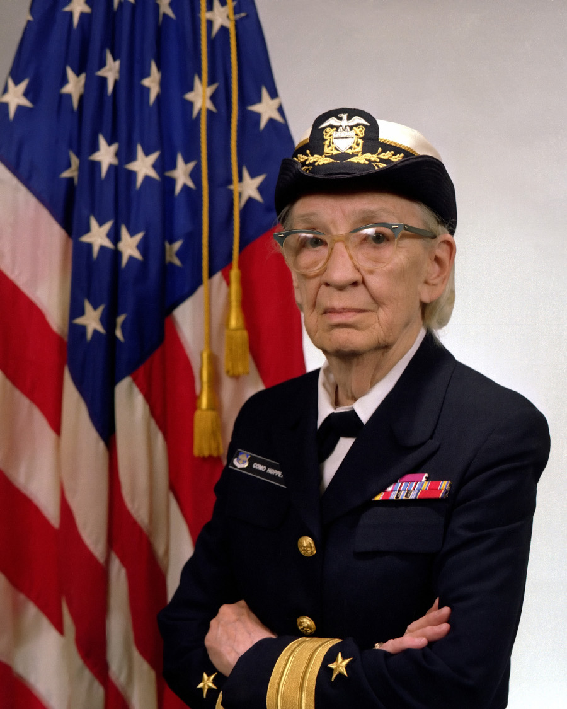

Team Profile
Welcome to our space

Our team name
In thinking about a name for our team, we drew inspiration from prominent pioneers in information technology. One of our members brought their personal favourite, Grace Hopper, back to the team. Hopper was a real admiral in the US Navy, was one of the first programmers on the Harvard Mark I computer, invented one of the first linkers, and popularised the concept of machine-independent programming languages, leading to the development of COBOL. As an extremely accomplished, entrepreneurial, and forthright person, she is a great figure to draw inspiration from in our activities.
To learn more about Hopper, go to https://en.wikipedia.org/wiki/Grace_Hopper
Meet The Gracehoppers

Andrew Ware
Student Number: s3820255
About: Born and raised in a small town called Sarina in QLD.
Education: Certificate 4 in computer programming.
Hobbies: Programming, Running, Robotic manufacturing.
Interest in IT: Programming, robotics and AI.
IT experience: Many years of tinkering.

Matthias Prilipp
Student Number: s3812605
About: Born and raised in good old Germany.
Education: Completed a Masters degree in Melbourne.
Hobbies: Football and Crossfit.
Interest in IT: Adding to existing skillset to keep step with changing
Industry.
IT experience:

Matt Kellock
Student Number: s3812552
About: Born and raised in Australia.
Education: All education to date has been through enterprise projects, this
is my first formal qualification.
Hobbies: Installing over complicated AV systems.
Interest in IT: Lifelong fascination in programming and computers spanning
multiple careers.
IT experience: Worked for the last 14 years in financial tech, last 3 as a
technical lead.

Michael Robertson
Student Number: s3817321
About: Born and raised in Hamburg, Germany.
Education: HSC equivalent education.
Hobbies: Checking out the latest technologies, watching football with his son
and having a cup of coffee while listening to some good music.
Interest in IT: Interested in almost any aspect of IT.
IT experience: Worked the past 20+ years in IT in various roles and
industries. Currently working as an IT Specialist and Shift Supervisor.